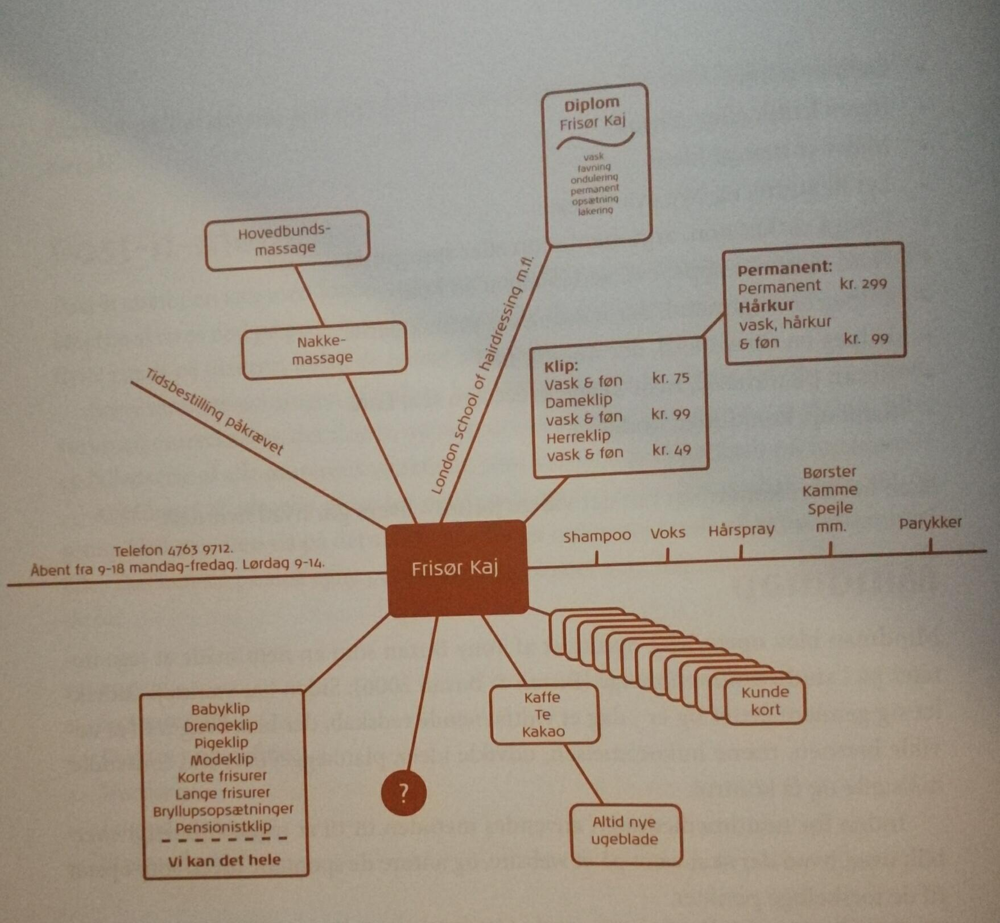

Ideudviklingsmetoder hjælper med at strukturere og styre ideudviklingen.
Ved at sætte nogle regler i ideudviklingen sørge vi for at presse os
selv helt ud og få os til at tænke udenfor boksen.
Metoden går ud på at en person siger et ord, hurtigt derefter siger den næste det første der falder ham ind.
Når man så har en række ideer, indsamler man dem og sortere dem.
Man skal fastsætte en bestemt tid for hvor længe processen skal forgå også skal man blive ved indtil uret ringer,
også selvom man går i stå, hvilket man højsandsynlig vil gøre.
Er en god metode at bruge efter associationsmetoden, nu skal ideerne sorteres,
ryddes ud i og sættes sammen.
Til sidst står man tilbage med nogle helt konkrete ideer, man kan arbejde videre med.
Brainstorm er en klassiker når det kommer til ideudvikling.
Man finder et emne og så kan man komme med bud, budene må ikke være enkle ord,
men skal være formuleres som hele tider.
Man må ikke være negativ og sige nej til andres ideer i denne fase.
Tony Buzan opfandt metoden mindmap, som en nem måde at tage noter til studiet. I dag bruges den til at udvikle hjernen, træne hukommelsen, udvikle ideer, planlægning og overtalelse mm. Når det kommer til multimediedesign bruges metoden til at få et overblik over det indhold en website skal indeholde. Man tegner/skriver et udgangspunkt i midten og derudfra skriver man relationerne på, jo længere væk fra midten jo flere detaljer kommer der på. Metoden kan både illustreres ved at tegne, skrive eller på anden vis.
Cirkelskrivning går ud på at man skriver en ide ned på papir og derefter sender man den videre til sin sidemakker, som så skal arbejde videre på den ide. Samtidig modtager man selv en ny ide, hvor man selv skal arbejde på.